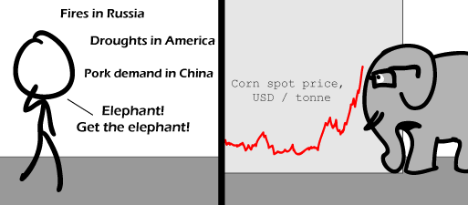

Comic JK 531
When I Feel Like It
⇤
<
?
>
⇥

⇤
<
?
>
⇥
Forum
.
RSS
.
Digg
.
Facebook
.
Reddit
.
Twitter
.
Stumbleupon
Enter your thoughts on number 531 here. Please, no spamming, trolling, or feeding the economists. Why not just use your mother instead of the elephant? -Can't say I understand this one... I'm not very familiar with economics so I can't say I understand this one. Maybe it´s about the "Elephant in the room" (in this case, Humanity is killing Earth)? The price can't go any lower because the elephant is in the way. >:D From what I understand of U.S. politics, the Republican party's mascot is an elephant (for some inadequately explored reason). Do these financial firms keep pet Republicans? >That is the mascot, but I believe the answer is above your comment. Elephants are the republican party's mascot because of a political cartoon in the Harper's Weekly in Nov. 7, 1874 as opposed to the democrats who got the symbol of the donkey because Andrew Jackson's opponents labeled him as a jackass and it just kind of stuck. -- Well, I'm not sure about the Russian fires, but droughts in the American Midwest would reduce corn production, and rising demand for Pork in china would lead to higher demand for pig feed (ie: corn), so corn prices would be expected to rise. The financial firms see this, and bet heavily that corn prices will rise. Corn prices promptly skyrocket to a price far higher than would be expected from the events that occurred. The "elephant in the room" is that the financial institutions caused the spike (and profited heavily off of it), since the events didn't even have enough time to affect the actual supply or demand of corn yet, and would not have had such a significant impact. Or at least I think that's what it means. -- >I think that's probably pretty close. >>Or maybe its just randomness -- I hope the explanation above is false. If it's true, then this comic is such an inside-joke it's just unfunny. -- Yeah, I think I over examined the comic a little bit (and made my explanation a little too wordy), since I am probably missing the simpler joke (Maybe it's Elephants. Those are funny, right?). Still, its what caused the 2008 spike in oil prices, so I hope it isn't that obscure. -- "Still, its what caused the 2008 spike in oil prices" >> That and the odd drunk trader playing fighter pilot with his company's trading interface. My interpretation was that all those events appear chronologically on the chart, each having a small effect compared to when the ticker hits the elephant. The elephant is what really causes the price to explode. Thus, financial firms' keeping pet elephants is the underlying reason for the asset bubbles. And don't forget that a lot of people and firms that buy at the top of bubbles incurred huge losses, too. It's the losers that actually cause the bubble, anyway. How about the line from the musical "Oklahoma" -- "The corn is as high as an elephant's eye"? >Actually you're right. This was just an obscure reference to Oklahoma. >>So multiple interpretations over many lines were wrong, as the author was actually writing a quick gag... some people might say that pretty much covers Literature courses in general... >>>Maybe somebody will write a masters dissertation about this piece. >>Aaahhh.... so NOW I understand why the elephant is wearing glasses! I thought it was just wearing them to make him look smart. Your explanations are fine, but why is the elephant wearing glasses? >Because he has poor eyesight .-.----. /o- ) | || __ |' '- ||| ||| oOo <--- This is poop and it's delicious. ------------------------ and the elephant retorted: "I know I wear glasses... there's no need to remind me..." This reminds me of Cow Tools. >wasn't he the villain in "The Water Margin" ?